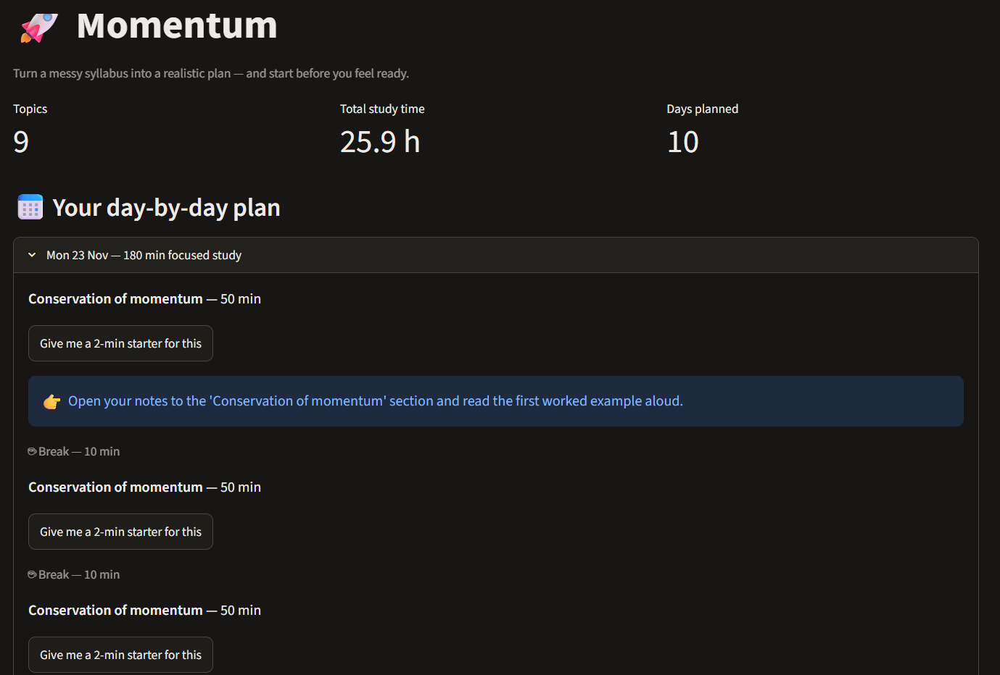
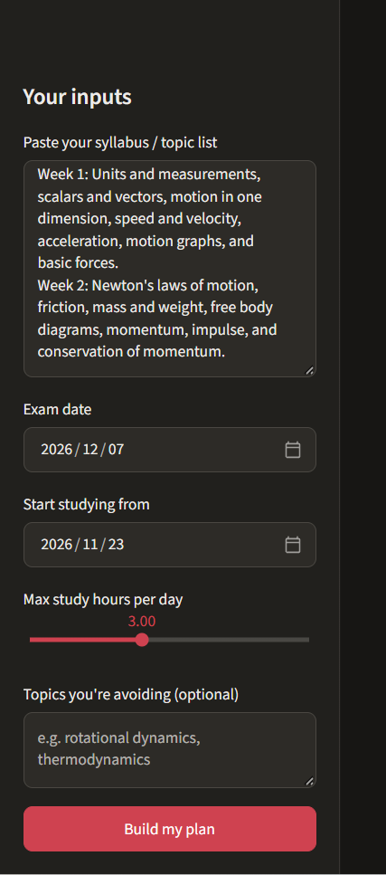

Momentum: AI Study Planner
GDG Build with Gemma Hackathon | University of Aberdeen | July 2026
A Streamlit study planner that turns a messy syllabus into a day-by-day revision schedule and gives a two-minute “momentum starter” action for topics users avoid, targeting the friction that causes procrastination. I competed against 15 UK teams for one of three prizes totalling $1,000.
Gemma 4 (Google AI Studio) parses syllabus text into topics, hours, difficulty and weak spots, while scheduling runs in plain Python so plans stay realistic and reliable. Weak spots are front-loaded into 25–50 minute sessions.
- Technologies
- PythonStreamlitGemma 4Google AI StudioGoogle GenAI SDKpython-dotenvGitHub
- My role
- Worked within a cross-functional team to design and develop the application's AI-powered planning features. Integrated Google's Gemma model into the workflow, contributed to prompt engineering and data processing logic, and helped translate user requirements into a reliable study-planning solution.
- Challenges and skills
- Separated generative AI (Gemma) from deterministic scheduling (Python) so the tool stays reliable under hackathon time pressure. Gained experience in prompt design, teamwork and building AI-powered apps to a deadline.

